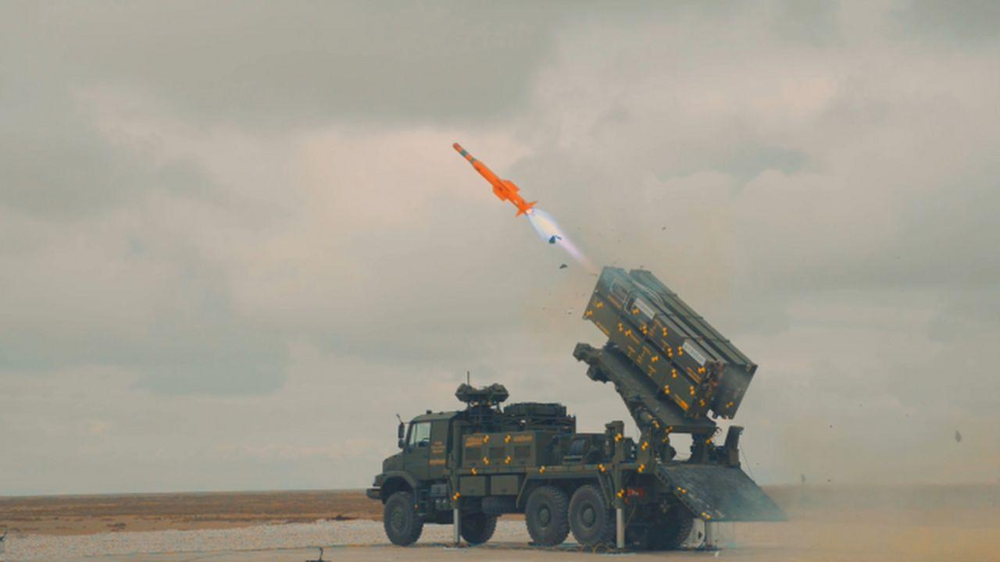
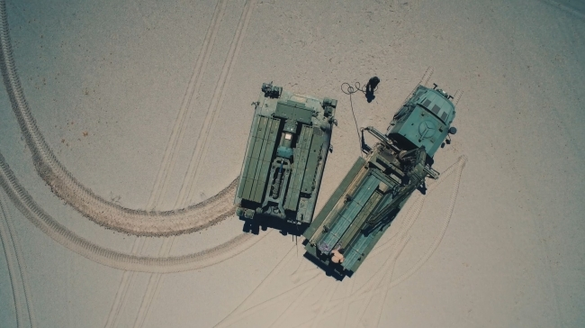
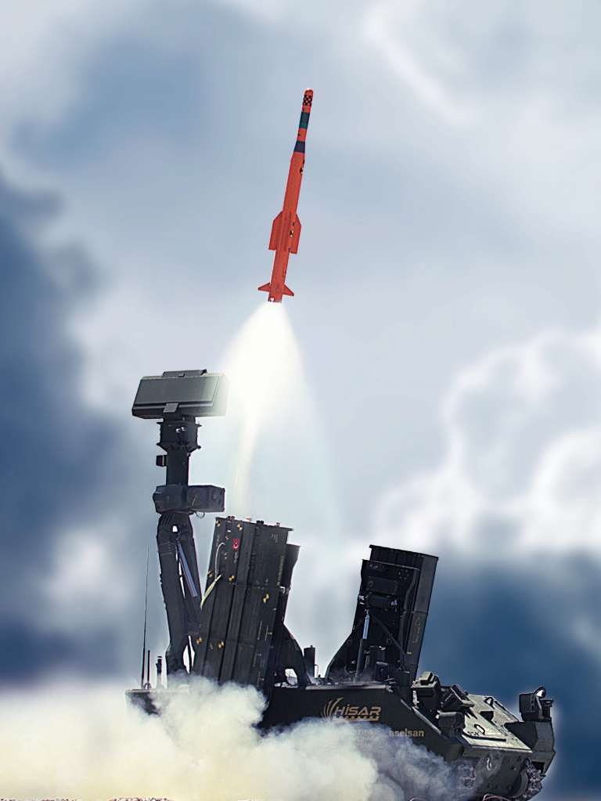

Alçak İrtifa Hava ve Füze Savunma Sistemi
HİSAR-A+, alçak irtifa hava ve füze savunma görevleri için geliştirilen yerli sistem ailesinin önemli üyelerinden biridir. Sistem; hareketli ve zırhlı birliklerin yanı sıra sabit birliklerin hava savunmasını sağlamak amacıyla geliştirilmiştir.
HİSAR-A+ mimarisi; hedef tespit, teşhis, takip, komuta kontrol, füze fırlatma ve angajman unsurlarını bir araya getiren entegre bir hava savunma çözümüdür. Gece ve gündüz, kötü hava koşullarında görev yapabilmesi ve takım halinde çalışabilmesi sistemin önemli özellikleri arasındadır.
Sistem, çoklu angajman ve ardışık ateşleme kabiliyeti sayesinde aynı görev ortamında birden fazla hedefe karşı etkin savunma sağlayabilir. HİSAR-A+ ayrıca katmanlı hava savunma yapısında diğer sistemlerle birlikte kullanılabilecek şekilde tasarlanmıştır.
15 km+
10 km+
4
65 km/s+
IIR
ASELSAN / ROKETSAN
| Sistem Tipi | Alçak irtifa hava ve füze savunma sistemi |
| Füze Adı | HİSAR-A+ |
| Görev Alanı | Hareketli ve zırhlı birlikler ile sabit birliklerin hava savunması |
| Hedef Türleri | Sabit kanatlı uçaklar, döner kanatlı platformlar, insansız hava araçları ve benzeri alçak irtifa tehditleri |
| Hedef Önleme Menzili | 15 km+ |
| Hedef Önleme İrtifası | 10 km+ |
| Atışa Hazır Füze Sayısı | 4 |
| Azami Sistem Hızı | 65 km/s+ |
| Füze Uzunluğu | 3.67 m |
| Füze Çapı | 234 mm |
| Ara Safha Güdüm | Ataletsel seyrüsefer ve veri bağı |
| Terminal Güdüm | Kızılötesi görüntüleyici arayıcı başlık (IIR) |
| Angajman Kabiliyeti | Çoklu angajman ve ardışık ateşleme |
| Hedef Süreci | Hedef tespit, teşhis, takip ve önleme |
| Dost-Düşman Tanıma | IFF sistemi mevcut |
| Görev Koşulları | Gece/gündüz ve kötü hava koşullarında görev yapabilme |
| Komuta Kontrol | Takım halinde görev yapabilme ve komuta kontrol entegrasyonu |
| Entegrasyon | Katmanlı hava savunma yapısı içinde farklı sistemlerle birlikte çalışabilir |
| Kullanım Yapısı | Özgün hava savunma sistemi mimarisi, füze fırlatma sistemi ve ilgili alt sistemlerle bütünleşik yapı |
| Öne Çıkan Özellik | Alçak irtifada çoklu hedefe karşı, mobil birlikleri korumaya yönelik yerli ve entegre hava savunma çözümü |
| Kullanım Konsepti | Mobil ve sabit birliklerin yakın/alçak irtifa hava savunması |
| Görev Esnekliği | Tek başına veya takım düzeninde görev yapabilme |
| Hava Savunma Katmanı | Alçak irtifa katmanında önleme |
| Platform Yaklaşımı | Füze fırlatma unsuru, radar/sensör unsurları ve komuta kontrol altyapısıyla görev yapar |
| Modernizasyon / Genişleme | Diğer hava savunma unsurlarıyla entegrasyona açık sistem mimarisi |


